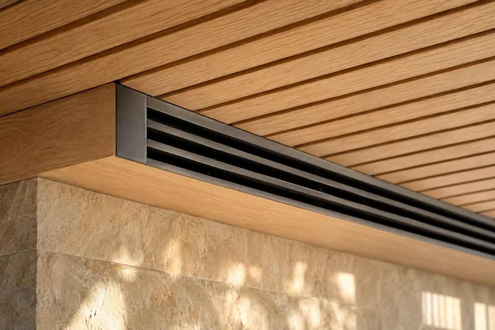

Климат
по вашему
плану.
Где поставить блок, как спрятать трассу, откуда придёт свежий воздух? Начните с комнат, которые хотите обустроить.
Что подойдёт объекту?
У каждого решения свои требования к фасаду, потолку и обслуживанию. Отметьте два или три, чтобы увидеть разницу.
План вашего объекта
Добавьте помещения и укажите условия монтажа. Готовое задание можно скачать и передать инженеру перед выездом.
Квартира

До того, как
закрыли потолок.
Что согласовать с дизайнером?
Нанесите на план места решёток, вывод конденсата и люки для обслуживания. Уточните, можно ли снять фильтр после установки шкафа или карниза.
Что взять на замер в готовой квартире?
Подготовьте план комнат, фотографии фасада и места наружного блока. Отметьте, где спите и работаете, чтобы обсудить направление потока и видимые участки трассы.
Как подготовить офис к обслуживанию?
Соберите модели установок и даты прошлых работ. Отметьте помещения, где шумит блок или стало душно, и часы, когда инженер сможет открыть потолочные люки.